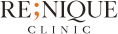

달라지고 싶지만,
다른 사람이 되고 싶지는 않습니다.
다른 사람이 되고 싶지는 않습니다.
우리는 아름다움을 새롭게 바라봅니다. 모두가 같은 모습이 되는 것이 아니라, 각자가 가진 고유한 아름다움에 집중합니다. 피부의 상태를 먼저 세심하게 살피고, 지금 가장 필요한 하나부터 시작합니다.
다시, 나다운 특별함을 찾는 것. 그것이 RE;NIQUE가 생각하는 아름다움입니다.
르니크 강남의 개원에 맞춰, 브랜드의 이름과 철학을 가장 먼저 전하는 브랜딩 영상을 제안합니다. 한 편의 마스터 필름에서 숏폼 · 광고 · 홈페이지 영상까지 이어지도록 설계해, 개원 초기의 브랜드 인지와 상담 전환을 함께 만듭니다.
RE;NIQUE는 프랑스어에서 온 이름입니다. ‘르니크’로 정확히 읽히고, 그 뜻이 기억되는 것이 브랜드 인지의 출발점입니다.
강남의 피부 미용 시장은 시술과 가격으로 비슷한 말을 합니다. 르니크는 ‘무엇을 하느냐’보다 ‘한 사람을 어떤 기준으로 보느냐’로 다르게 기억되어야 합니다.
MSO 네트워크의 1호점으로서, 이후 지점에서도 그대로 쓸 수 있는 영상 자산과 표현 기준이 필요합니다.
RE;NIQUE는 프랑스어 Renouveau(다시 찾아오는 봄, 새로움)와 Unique(세상에 단 하나뿐인, 고유함)를 세미콜론으로 이은 이름입니다. 세미콜론은 새로움과 고유함이 만나는 지점이자, 시술 뒤에도 이어지는 관리를 뜻합니다.

우리는 아름다움을 새롭게 바라봅니다. 모두가 같은 모습이 되는 것이 아니라, 각자가 가진 고유한 아름다움에 집중합니다. 피부의 상태를 먼저 세심하게 살피고, 지금 가장 필요한 하나부터 시작합니다.
다시, 나다운 특별함을 찾는 것. 그것이 RE;NIQUE가 생각하는 아름다움입니다.
네 가지 가치를 영상의 장면 설계 기준으로 삼습니다.
아름다움을 하나의 모습으로 정하지 않습니다.
기기 · 샷 수 · 회복 기간을 명확하게 설명합니다.
지금 무엇이 먼저인지부터 정합니다.
지점이 늘어도 기준을 이어갑니다.
르니크의 진료는 네 가지 카테고리로 구성됩니다. 영상에서는 카테고리마다 하나의 오브제와 피부 장면을 짝지어 보여 줍니다.
“나다운 선을 아름답게 완성하다.”
“피부의 바탕을 고르게 가꾸다.”
“본연의 맑은 빛을 깨우다.”
“원하는 모습으로, 섬세하게 덜어내다.”
세미콜론은 문장을 끝내지 않고 다음으로 이어 주는 부호입니다. 르니크는 고객을 다른 사람으로 바꾸는 곳이 아니라, 지금의 나에서 다시 시작하게 하는 곳입니다. 영상은 ‘끝나지 않고 이어지는 선’으로 시작해, 그 선이 이름과 철학을 지나 한 사람의 얼굴에 닿는 흐름으로 이 메시지를 전합니다.
브랜드 슬로건을 영상의 마지막 문장으로 씁니다.
고객이 피부 미용을 고민할 때 가장 먼저 떠올리는 마음에서 영상을 시작합니다.
더하는 것만이 아름다움은 아닙니다. 과장된 전후 비교 대신 절제된 오브제와 빛으로 ‘본연’을 표현합니다.
오프닝의 오렌지 선이 이름, 네 카테고리, 엔드 카드의 오렌지 면으로 이어집니다. 세미콜론의 ‘이어짐’을 화면 전체의 흐름으로 바꾼 장치입니다.
선 · 자연석 · 빛 · 걷히는 입자. 네 가지 오브제를 같은 구도와 같은 빛으로 피부 장면에 이어, 시술명을 말하지 않고도 카테고리의 의미를 보여 줍니다.
르누보 · 위니크 · 르니크. 내레이션이 이름을 직접 발음하고, 로고가 완성되는 순간 ‘르니크’를 자막으로 함께 보여 줍니다.
여섯 개의 시퀀스, 15컷으로 구성합니다. 컷별 상세는 스토리보드에서 확인하실 수 있습니다.
끝나지 않는 오렌지 선 → “달라지고 싶지만, 다른 사람이 되고 싶지는 않습니다.”
Renouveau + Unique → RE;NIQUE. ‘르니크’로 읽히는 이름
“아름다움은 더하는 데서만 완성되지 않습니다.”
LIGNE · VELOUTÉ · ÉCLAT · PURETÉ. 오브제 → 피부 매치컷
라운지 · 상담실 · 진료실. 지금 가장 필요한 하나부터
“다시, 나다운 특별함으로.” 오렌지 면 위 시그니처
약 150자 · 차분한 30대 여성 보이스 기준 약 42초(무음 구간 포함 60초). 영문 버전은 Renouveau · Unique와 네 카테고리명을 프랑스어로 발음합니다.
르니크 브랜드 가이드의 컬러 · 서체 · 로고 기준을 영상에 그대로 적용해, 간판에서 썸네일까지 같은 얼굴로 보이게 합니다. 영상은 에스프레소 바탕을 기본으로 합니다.
영상 · 홈페이지 · 사인의 컬러 비율입니다. 한 화면의 바탕은 에스프레소나 화이트 중 하나로 정합니다.
한 번의 촬영으로 여섯 가지 버전을 만들어, 월 마케팅 예산 안에서 소재 효율을 높입니다.
| 구분 | 길이 · 비율 | 내용 | 활용 | 비고 |
|---|---|---|---|---|
| A. 메인 브랜드 필름 | 60″ · 16:9 | 콘셉트 전체를 담은 마스터 영상 | 유튜브, 홈페이지, 대기 라운지 | 국문 / 영문 자막 |
| B. 컷다운 | 30″ · 16:9, 1:1 | Name + 4 Directions + Ending | 온라인 광고, 개원 티저 | 개원 안내 카드 포함 |
| C. 카테고리 숏폼 ×4 | 15″ · 9:16 | LIGNE / VELOUTÉ / ÉCLAT / PURETÉ | 릴스, 쇼츠, 광고 소재 | 시술 정보는 캡션으로 안내 |
| D. 원장 퍼스널 숏폼 ×2 | 30″ · 9:16 | 원장별 철학과 전문 분야 인터뷰 | 릴스, 의료진 소개 페이지 | 전문 분야 확정 후 제작 |
| E. 홈페이지 루프 | 20″ · 16:9 / 9:16 | 무음 오브제 · 공간 컷 반복 | 홈페이지 메인 히어로 | 용량 최적화본 |
| F. 로고 범퍼 | 6″ · 전 비율 | 오렌지 선 → 시그니처 로고 | 모든 콘텐츠의 인트로 · 아웃트로 | 전 지점 공용 |
2027년 1월 개원에 맞춰, 개원 2주 전 티저 공개를 목표로 진행합니다. 병원 촬영은 준공 일정에 맞춰 확정합니다.
콘셉트, 내레이션, 라인업 확정
캐스팅, 로케이션 · 오브제 준비, 음원 선정, 의료광고 검토 요청
네 카테고리 오브제, 모델 클로즈업
공간, 의료진, 퍼스널 인터뷰
메인 필름 가편집 시사, 범퍼 · 엔드 카드 제작
내레이션 녹음, 믹싱, 영문 자막
컷다운 · 숏폼 순차 공개, 홈페이지 루프 적용
원장별 콘텐츠, 인플루언서 콘텐츠와 연계
의료광고 기준과 브랜드 가이드를 지키며 제작 · 공개합니다.
원활한 진행을 위해 아래 사항을 함께 정하고자 합니다.
지점이 늘어도 흔들리지 않는 하나의 기준을, 가장 먼저 영상으로 보여 드리겠습니다.